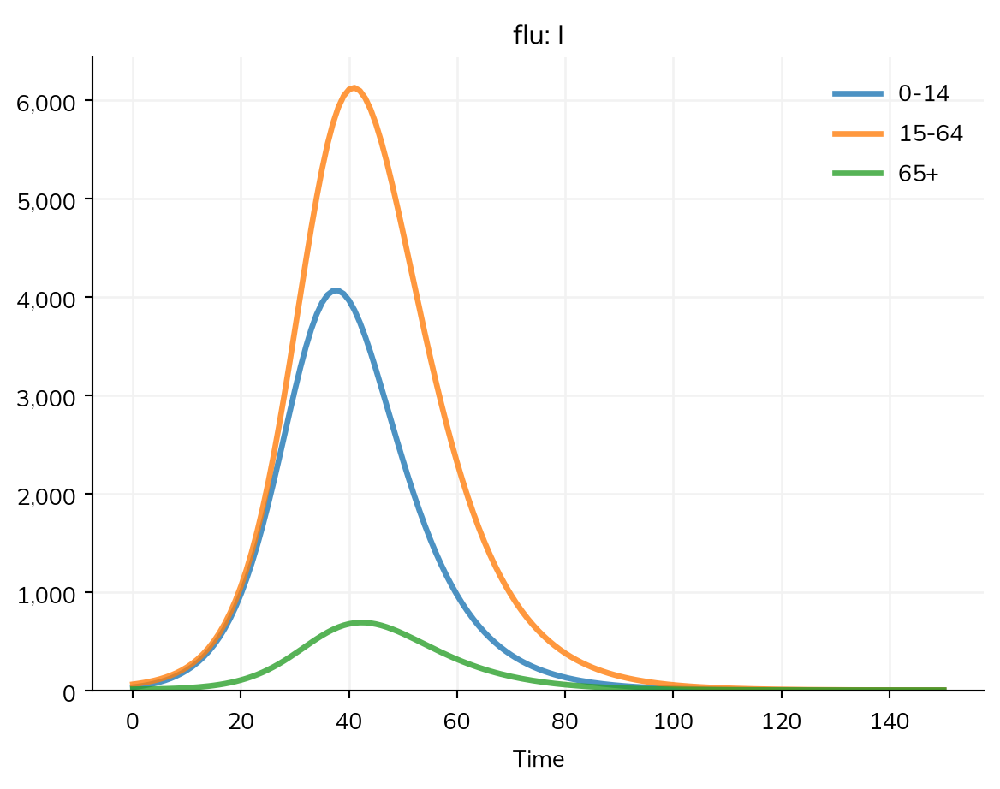
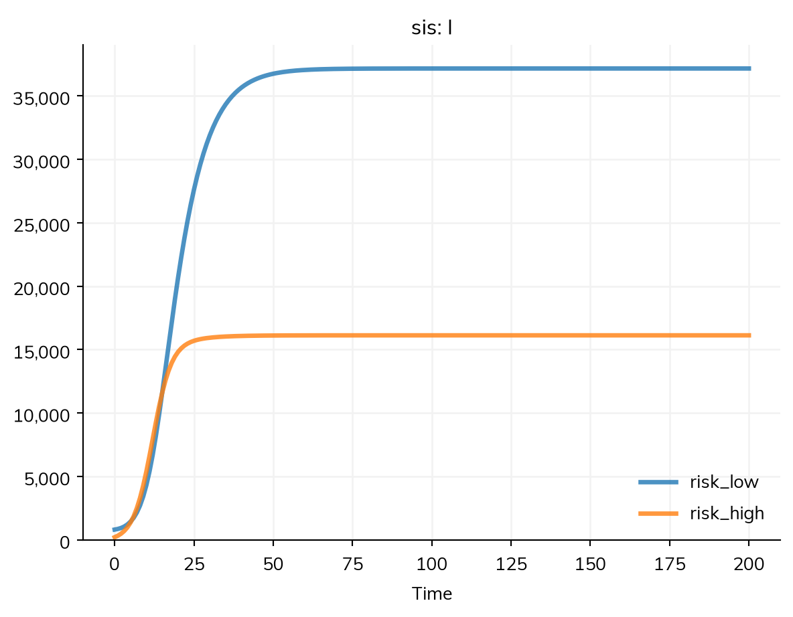

A model of a particular setting needs data about its people: how many there are and of what ages, how fast they are born and die, and who has contact with whom. Starsim has these for every country, by name, and takes data of your own in the same forms. This page covers the data that comes with Starsim, contact matrices (by age and by other groups, under compartments and agents), and using data of your own.
These data describe a setting; they don’t set the disease’s parameters, and a model that uses them still needs checking against data on the disease itself (see Fitting a model). Networks of individual contacts are on Contact networks, places and the movement between them on Geography, and the tutorial T4 – Age groups and contacts uses a contact matrix for measles.
Data by place
Starsim has data for each country, from the package starsim_data: populations by age and sex, birth and death rates, contact matrices, and administrative units (counties, provinces, and states). What is small and common (the contact matrices of 177 countries, populations, and the first two administrative levels of every country) is bundled with it; the rest is downloaded on first use. The model objects that use a place take its name, and ss.data gives the data itself, for looking at or using elsewhere:
What
In a model
The data itself
Population by age and sex (UN World Population Prospects)
ss.people('Kenya')
ss.data.population('Kenya'), ss.data.age('Kenya')
Contact matrix by 5-year age group (Prem et al. 2021)
ss.contacts('Kenya')
ss.data.contacts('Kenya')
Birth and death rates by year (and by age and sex, for deaths)
Administrative units, with their populations and positions
ss.geo.geography('Kenya', level=1)
ss.data.geography('Kenya', level=1)
A named population gives the sim its size (total_pop) and the share of people in each age group, so a model stratified by age needs no shares of its own; as agents, it gives the agents their ages and sex (see People and agents). Birth and death rates are on Demographics, and administrative units on Geography.
ss.people() and ss.contacts() take a year and a source: ss.people('Kenya', year=2030) (from 1950 to 2100, with the years between the UN’s decadal values interpolated), and ss.contacts('Kenya', source='mistry2021') for the matrices of Mistry et al. (2021), by single year of age, for 36 countries. A US state is named with its country, ss.people('United States:Massachusetts') and ss.contacts('United States:Massachusetts'), from the US Census and Mistry et al. The data is given as tables (dataframes), with the age groups labeled as a stratification by age labels them ('0-4', '5-9', …, '100+') and where the data came from in .attrs['ref']:
import starsim as ssbirths = ss.data.rates('Kenya', 'births') # Crude birth rates per 1,000 people, by yearprint(births.head())pop = ss.data.population('Kenya', year=2024) # Women and men by 5-year age groupprint(pop.head())print('Population of Kenya in 2024:', round(pop.values.sum()))print('Source:', pop.attrs['ref']['study'])
Time CBR
0 1950 49.337002
1 1960 55.183998
2 1970 52.540001
3 1980 48.210999
4 1990 43.930000
female male
age
0-4 3586313.4 3638635.6
5-9 3459840.7 3508844.1
10-14 3356363.8 3389349.9
15-19 3107114.7 3099878.9
20-24 2810269.8 2744290.3
Population of Kenya in 2024: 56571298
Source: UN World Population Prospects
Every piece of data records where it came from, which describe() shows. Record the source and year with an analysis: the data don’t all have the same reference year.
A contact matrix by age
A contact matrix needs groups to act between, so the model is stratified by age first (see Stratification): here into children (0–14), adults (15–64), and older people (65+), with the share of the population in each. ss.contacts() takes the matrix and the lower edge of each of its age groups. With a contact matrix, β is the probability that a contact with an infectious person infects.
The infection here is a flu-like one, much less transmissible than measles, so that the differences between groups show:
import starsim as ssS, I, R = ss.states('S I R')infection = S >> I @0.03*I # β = 0.03 per contactrecovery = I >> R @ ss.days(5) # Infectious for 5 days on averageflu = ss.Disease(infection, recovery, init_prev=0.001)flu.stratify(age={0: 0.3, 15: 0.6, 65: 0.1}) # Ages 0-14, 15-64, and 65+, with the share of people in eachcontacts = ss.contacts(ages=[0, 15, 65], matrix=[[10, 4, 0.5], [2, 8, 0.5], [1.5, 3, 2]]) # Contacts a daysim = ss.Sim(flu, networks=contacts, total_pop=100_000, stop=ss.days(150))sim.run()sim.results.flu.I.by('age').plot()
Sim: flu, 100,000 people, as an ODE, days 0 to 150
flu: R0 = 1.83, with 100 infectious at the start
Done in 0.0033 s; flu: 67,902 infections; at most 10,741 infectious, on day 40

Children have the most contacts, mostly with each other, and older people the fewest, so the share infected falls with age:
infections = sim.results.flu.infection.by('age').summarize() # The total in each age grouppeople = [30_000, 60_000, 10_000]print('Share infected in each age group:', (infections/people).round(2))
Share infected in each age group: 0-14 0.80
15-64 0.65
65+ 0.46
Name: infection, dtype: float64
The R0 that the sim prints comes from the matrix: with a contact matrix, R0 is β × the infectious period × the largest eigenvalue of the matrix, which is about 12.2 here, so R0 = 0.03 × 5 × 12.2 ≈ 1.8.
To see what the matrix adds, compare it with homogeneous mixing with the same R0: a mixing pool with 12.2 contacts a day for everyone:
With homogeneous mixing, every age group has the same share infected, 74%. With the matrix, children, who have the most contacts, are infected most and older people least, and fewer people are infected in all, though R0 is the same: the epidemic burns out among the groups that drive it while others are still mostly susceptible. Who is infected matters for anything that differs by age, such as severity, and for targeting interventions.
Reciprocity
Each contact between two groups is counted from both sides: the contacts that children have with adults, over all children, should equal those that adults have with children, over all adults. So with N the number of people in each group, Ni × Cij = Nj × Cji. The matrix above is reciprocal for the shares given: 30% of people with 4 contacts each with adults, and 60% with 2 each with children. A matrix from a contact survey is reciprocal for the population surveyed but not necessarily for the model’s own; Starsim uses a matrix as given, with each row as the contacts of a person in that group, and says so in a note when it is not reciprocal for the model’s shares (for a matrix with its own age groups, once it is aggregated to the model’s).
The matrix’s own, given by their lower edges; they need not be the model’s
A matrix over the model’s groups
ss.contacts(matrix) (its age groups), ss.contacts(matrix, dims='risk')
The levels of the model’s stratification by that name, in order
One matrix over several stratifications together
ss.contacts(matrix, dims=['sex', 'risk'])
Every combination of their levels
A matrix for each of several stratifications
ss.contacts(dict(age=..., risk=...))
Every combination of their levels, with the product of the entries for each
A country’s matrix, by name
ss.contacts('Kenya')
5-year age groups, from a published study
A matrix with its own age groups suits data, which comes with the age groups of the study. In a compartmental run it is aggregated to the model’s age groups, weighted by population, with a note that says so. As agents, each person has an exact age and is counted in whichever of the matrix’s groups it falls in.
Groups need not be ages. A list of names makes groups of any kind, and ss.contacts() then takes a matrix over them, with the name of the stratification as dims=. Here 20% of people are at high risk, and they have four times as many contacts with each other as people at low risk have:
S, I = ss.states('S I')infection = S >> I @0.05*Irecovery = I >> S @ ss.days(10) # No lasting immunitysis = ss.Disease(infection, recovery, init_prev=0.01)sis.stratify(risk={'low': 0.8, 'high': 0.2})mixing = ss.contacts([[2, 1], [4, 8]], dims='risk') # Reciprocal: 80% × 1 = 20% × 4sim = ss.Sim(sis, networks=mixing, total_pop=100_000, stop=ss.days(200))sim.run()sim.results.sis.I.by('risk').plot()
Sim: sis, 100,000 people, as an ODE, days 0 to 200
sis: R0 = 4.3, with 1,000 infectious at the start
Done in 0.0028 s; sis: 1,023,055 infections; at most 53,280 infectious, on day 200

With a matrix for each of several stratifications (ss.contacts(dict(age=..., risk=...)), with ages= if the one by age has its own age groups), the contacts between two groups are the product of the entries for each. When that is not how people mix (men mix with women, and by risk differently for each sex), one matrix over the stratifications together says it, with an axis for each, rows before columns:
import numpy as npmatrix = np.zeros((2, 2, 2, 2)) # [sex, risk, sex, risk], with sex ['female', 'male'] and risk ['low', 'high']matrix[0, :, 1, :] = [[0.8, 0.2], [0.5, 1.5]] # Women's contacts with menmatrix[1, :, 0, :] = [[0.8, 0.5], [0.2, 2.0]] # Men's contacts with womenmixing = ss.contacts(matrix, dims=['sex', 'risk'])
Units
The entries of a matrix are contacts per unit time, in the sim’s unit unless unit= says otherwise (e.g. ss.contacts(matrix, ages=[0, 15], unit='day')). A country’s matrix is always contacts a day, as the studies give them, whatever the sim’s unit.
Contact matrices by setting
A country’s contact matrix can be split by setting: ss.contacts('Kenya', layer=['home', 'school', 'work', 'community']) gives a matrix for each, named after it, which together make up the whole. Each can then be changed on its own with ss.modify(); here schools close from day 10:
S, I, R = ss.states('S I R')infection = S >> I @0.03*Irecovery = I >> R @ ss.days(5)flu = ss.Disease(infection, recovery, init_prev=0.001)flu.stratify(age=[0, 5, 15, 65]) # The shares in each come from the populationlayers = ss.contacts('Kenya', layer=['home', 'school', 'work', 'community'])home, school, work, community = layersclosure = ss.modify(school, multiply=0, start=ss.days(10)) # No school contacts from day 10kw =dict(people=ss.people('Kenya'), networks=layers, stop=ss.days(100), verbose=0)scenarios = {'Schools open': ss.Sim(flu, **kw),'Schools closed from day 10': ss.Sim(flu, interventions=closure, **kw),}msim = ss.parallel(scenarios)msim.plot('flu.I')
school = ss.data.contacts('Kenya', layer='school')print('Age groups:', list(school.index))print('Contacts a day of a child aged 10-14 at school with children aged 10-14:', round(school.loc['10-14', '10-14'], 1))print('Source:', school.attrs['ref']['study'])
Age groups: ['0-4', '5-9', '10-14', '15-19', '20-24', '25-29', '30-34', '35-39', '40-44', '45-49', '50-54', '55-59', '60-64', '65-69', '70-74', '75+']
Contacts a day of a child aged 10-14 at school with children aged 10-14: 4.0
Source: Prem et al. 2021
Contact matrices as agents
Everything above runs as agents too. Given n_agents, the people take their ages from the population, and each agent is counted in the matrix’s age groups by its exact age:
As agents, a contact matrix works as a set of mixing pools, one for each pair of groups (ss.MixingPools; see Contact networks). It is not a network: nobody has particular contacts, so contact tracing needs a network instead.
Data of your own
Data of your own takes the same forms as the data by place. Ages are a table of counts or shares by age group, for ss.People(n_agents, age_data=...) (see People and agents), and ss.data.age() gives a country’s in that form, for a different year or to change before use:
Birth and death rates are tables by year (and by sex and age for deaths), for ss.Births() and ss.Deaths() (see Demographics); a contact matrix is an array, with the lower edges of its age groups, for ss.contacts(matrix, ages=...), as above, or a table labeled by age group ('0-14', '15-64', '65+'), as ss.data.contacts() gives, for ss.contacts(table); and places are a table of names, populations, and positions, for ss.geo.geography() (see Geography).
Data on the disease itself (cases, deaths, prevalence) is a different input: it is given to the sim with data=, to plot with the results and fit the model to (see Fitting a model). Before using any data, check its units, its denominators, and the period it covers: a contact survey gives contacts a day, a crude birth rate is per 1,000 people a year, and a blank cell means not observed, while a zero is a count of none.
Pitfalls
A contact matrix needs groups.ss.contacts(...) or ss.contacts(..., dims='risk') on a model that is not stratified by that name raises an error that says to stratify it. A matrix with its own age groups, on a model with no age groups, stratifies it by the matrix’s groups, with the shares of the world’s population in each: a guess, which describe() marks. Give the shares (or a named population) if they matter.
β is per contact. Adding a contact matrix to a model whose β was a rate per day with homogeneous mixing multiplies its R0 by roughly the mean number of contacts. Check the R0 that the sim prints.
Whose age groups.ss.contacts(matrix, ages=[...]) has the matrix’s own age groups, regrouped to the model’s; ss.contacts(matrix) is over the model’s own age groups, so its shape has to match them.
Reciprocity. A matrix that is not reciprocal for the model’s population means groups disagree about how many contacts they have with each other. Starsim uses it as given; check a matrix that you wrote by hand.
Units. A bare matrix is contacts per unit time in the sim’s unit. In a sim whose unit is years, matrix=[[10, ...]] means 10 contacts a year; give unit='day' for contacts a day.